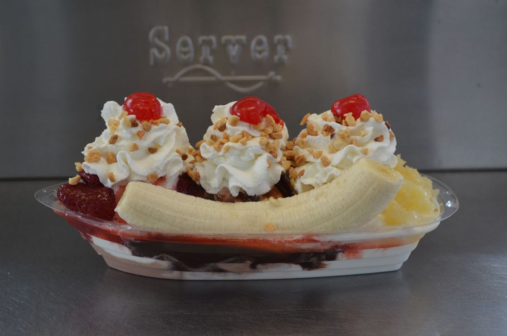
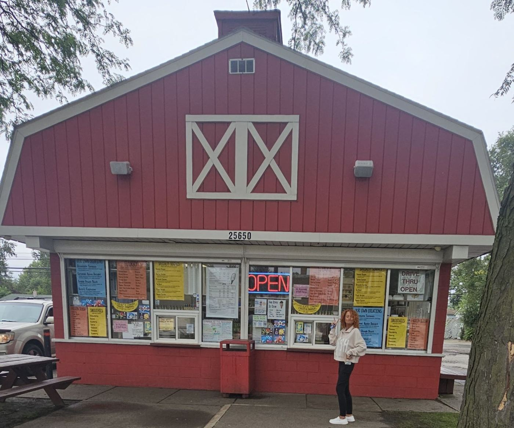
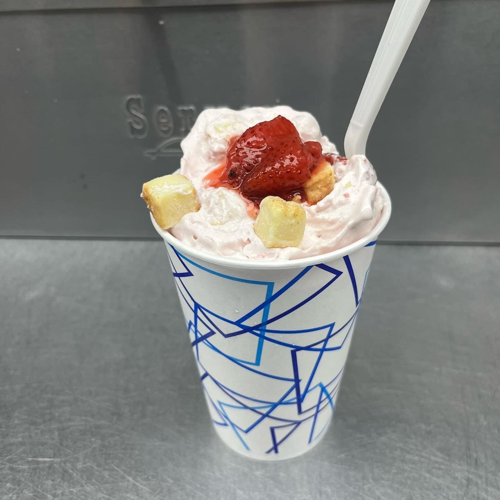
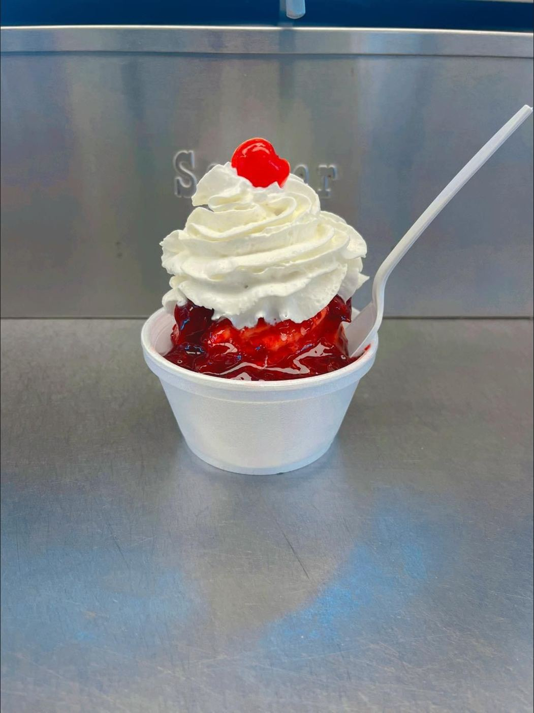
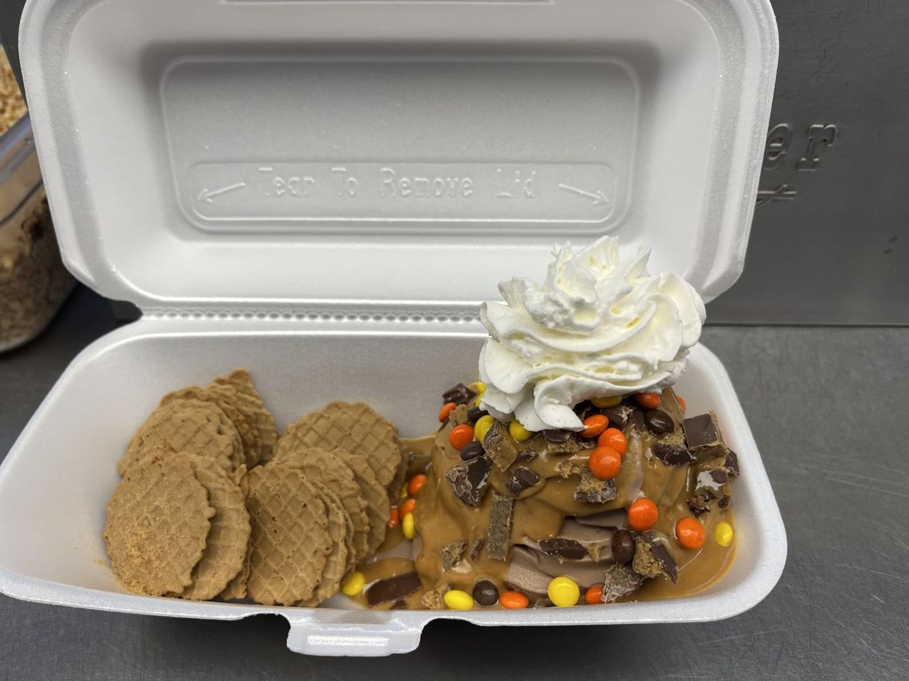

Taylor, Michigan · Ecorse RdTaylor Queen Ice Cream
The red barn on Ecorse Road: soft serve, sundaes, flurries and banana splits. 4.7★ from 668 Google reviews.
Call (734) 776-9999Directions
What we scoop
Soft serveVariety of flavored soft serve
Hard scoopRich, creamy custard & ice cream
FlurriesCustom flurries made your way
Banana splits“Best banana split in Michigan”
Ice cream nachosA regulars’ favorite
Slushes & dipped conesPlus unique novelty popsicles
Fresh out the window






Locals say
I’ve been going to Taylor Queen ice cream shop for years since I’ve moved to Taylor. But then even after I move to Taylor down river area. I still continue to drive 25 to 30 minutes. Just to go get Taylor ice cream. I love them and they’re very welcoming. Plus the owners always recognize me, and he’s always the sweetest to me and my family.
They made my wife an amazing custom flurry. They got the best banana split I've had in Michigan, and my son had a great time! Super friendly staff and id highly suggest coming here first if you're looking for a great little ice cream spot
Some of the nicest staff and delicious custard and ice cream. Weve had a lot of their flavors and theyre all rich and creamy. The sundaes, flurries, and ICE CREAM NACHOS are all so good, well made, and big. Will continue to visit.